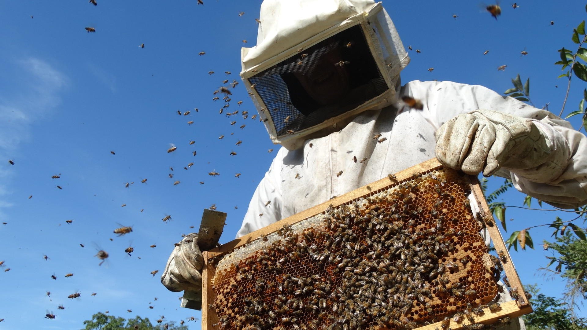

Uma Empresa que Cuida de você
O apicultor é o profissional que atua na área de criação e tratamento de abelhas. Dessa forma, e comum que este mesmo profissional trabalhe com extração e confecção de produtos provenientes desse inseto, tais como o mel, o própolis, a geleia real, dentre outros.
